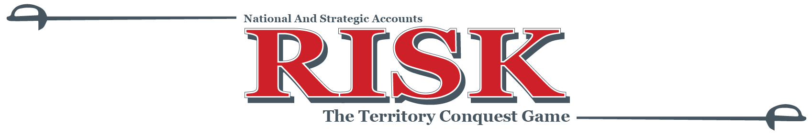

Home
/
About
/
Resources
/
Campaigns
/
The Daily Lead


Game Rules:
Prizes:
Let’s Play NASA Risk: The Territory Conquest Game!
Across H1, Principal teams will be pitted against one another in a battle to conquer the health care world. Principal teams can grow their territory by passing OAB leads, scheduling OAB visits, and closing OAB units. The Principal team with the most square miles of conquered territory on the map will win eternal glory (and an awesome prize).
- The objective of the game is to have the most square miles out of all of the Principal teams
- Here’s how you grow your territory:
OAB leads = 1 square mile, OAB visits = 3 square miles, OAB units = 5 square miles. - All OAB metrics occurring between 1/1/2016 and 6/30/2016 will count towards the game
- "Secret Weapons" and "Principal Power" will earn you extra points:
What are "Secret Weapons"?
CMA, PDI, and TD are secret weapon products that can earn your team double the square miles in Q2. Starting April 1st and continuing through the end of the campaign, leads passed, visits scheduled and units closed for these three products will earn double points. CMA/PDI/TD leads = 2 points, visits = 6 points, units = 10 points
What is "Principal Power"?
Also starting April 1st and continuing through Q2, NASA Principals will have a unique opportunity to double the points for their team. Principal leads, visits and units that occur during Q2 for any product will earn double points.
*Principal leads/visits/units for secret weapon products (CMA, PDI, TD) will not be doubled twice
1st Place:
Super cool team event (think:"Escape the Room"),
plus $500 for each individual on the Principal team
2nd Place:
Principal team happy hour sponsored by OAB,
plus $200 for each individual on the Principal team
3rd Place:
$100 for each individual on the Principal team